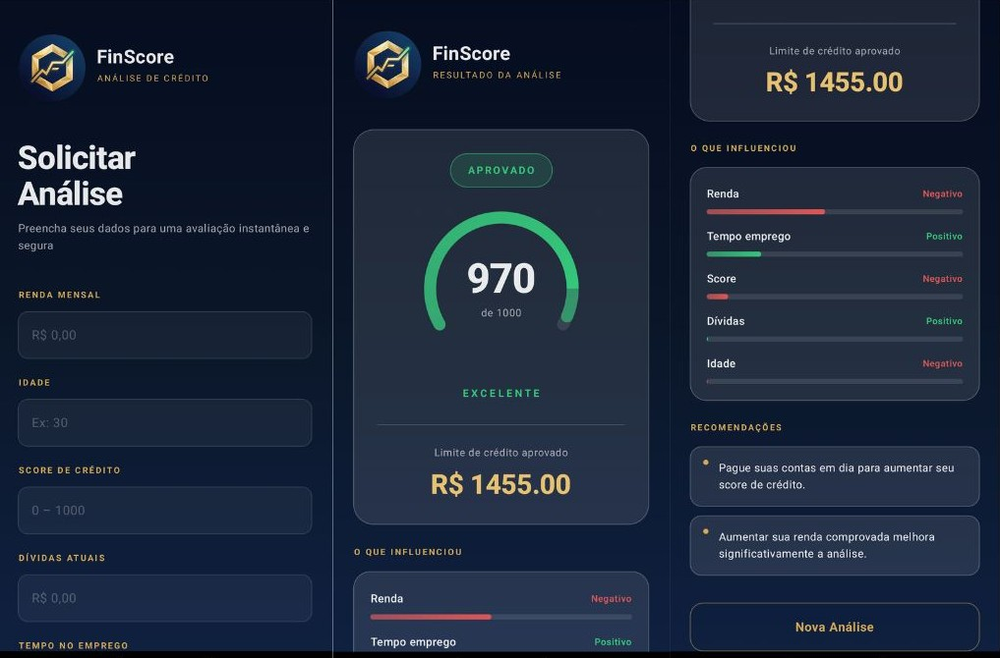
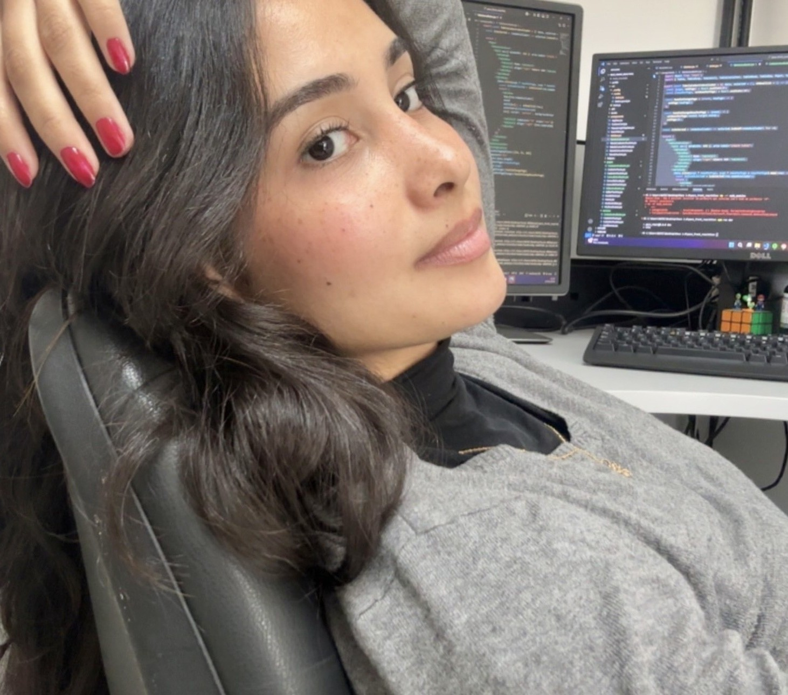

Crio soluções backend com Java e Spring Boot, focadas em performance e escalabilidade.

const me = { "introducao": "Minha trajetória na tecnologia começou desde cedo, aos 14 anos, quando ingressei no Instituto Federal do Pará e me formei como técnica em Informática. Foi ali que tive meu primeiro contato com linguagens de programação, participei de projetos e comecei a desvendar diferentes áreas da tecnologias."", "formacao": "Segui na área com a graduação em Ciência da Computação, onde aprofundei meus conhecimentos e desenvolvi uma base ainda mais sólida em desenvolvimento de software."", "primeiros_passos": "Minha primeira experiência profissional foi como monitora, ensinando crianças no desenvolvimento de jogos e robótica. Uma fase que fortaleceu minha comunicação e didática."", "experiencia_agu": "Depois disso, atuei como estagiária na Advocacia-Geral da União por dois anos, participando de diversos projetos. Um dos principais foi o PACE 2.0, um sistema de agendamento e controle de escalas, onde trabalhei diretamente com Java e Spring Boot no desenvolvimento e evolução da aplicação."", "atuacao_atual": "Hoje, atuo no desenvolvimento de sistemas em uma empresa de monitoramento de veículos, trabalhando com Java e GWT na refatoração de uma aplicação legada, melhorando estrutura, desempenho e manutenção do sistema."", "cetificacao_e_objetivo": "Também possuo certificação AWS Cloud Practitioner e continuo em constante evolução, buscando sempre construir soluções eficientes, bem estruturadas e que façam sentido no contexto que são aplicadas."", };

Aberta a projetos e colaborações.
Entre em contato comigo por:
anamtsoares2003@email.com